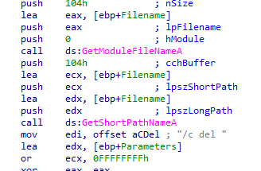
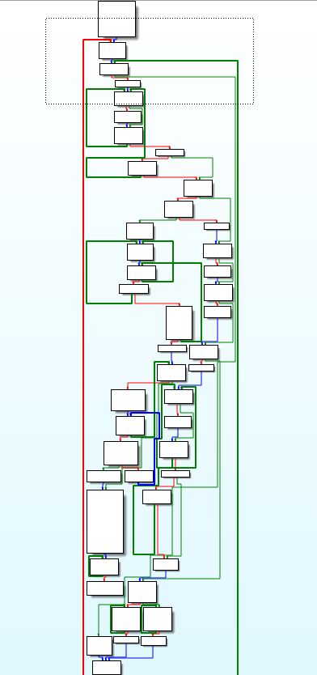
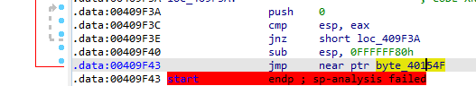
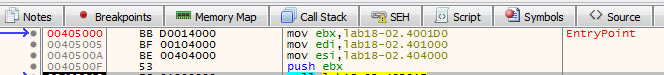
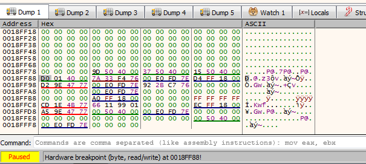
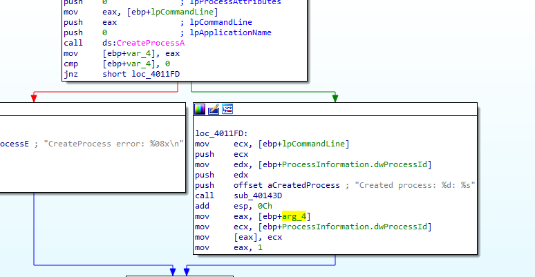
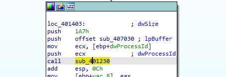

Practical Malware Analysis - Lab 17
This chapter’s labs focus on anti-VM techniques
The script provided to detect anti-VM mentioned in the chapter doesn’t work on ida 7.5+ so here is a refactored one
from idautils import *
from idc import *
import idaapi
antiVM = []
for head in Heads(): #all instructions in the binary
mnem = print_insn_mnem(head)
if mnem in ["sidt", "sgdt", "sldt", "smsw", "str", "in", "cpuid"]:
antiVM.append(head)
print(f"Number of potential Anti-VM instructions: {len(antiVM)}")
for addr in antiVM:
idaapi.set_item_color(addr, 0x0000ff)
print(f"Anti-VM: {hex(addr)}")
Lab 17-1
Analyze the malware found in Lab17-01.exe inside VMware. This is the same malware as Lab07-01.exe, with added anti-VMware techniques.
Q1: What anti-VM techniques does this malware use?
Running above script, it found 3 used
2 in main function

1 in 401100 routine call
these registers must contain values valid for the underlying host operating system and will diverge from values expected by the virtualized (guest) operating system. Since the sidt (register points to idt interrupt descriptor table), sgdt (global dt contains access details like memory access rights), and sldt(local dt) instructions can be invoked at any time by user-mode code without being trapped and properly virtualized by VMware, they can be used to detect its presence.
Q2: If you have the commercial version of IDA Pro, run the IDA Python script from Listing 17-4 in Chapter 17 (provided here as findAntiVM.py). What does it find?
above
Q3: What happens when each anti-VM technique succeeds?
It runs this routine which self-deletes the file
Q4: Which of these anti-VM techniques work against your virtual machine?
Using x32dbg to see which branches are taken for each check, and we reach to wait for 2100 year passing all the checks, none worked.

Q5: Why does each anti-VM technique work or fail?
Maybe as my VM is on virtualbox plus its multiprocessor because each processor (guest or host) has an IDT assigned to it.
Q6: How could you disable these anti-VM techniques and get the malware to run?
Either patch the JMP instructions or NOP all checks or use multiprocessor with virtualbox or disable hardware acceleration in vmware
Lab 17-2
Analyze the malware found in the file Lab17-02.dll inside VMware. After answering the first question in this lab, try to run the installation exports using rundll32.exe and monitor them with a tool like procmon. The following is an example command line for executing the DLL:
rundll32.exe Lab17-02.dll,InstallRT (or InstallSA/InstallSB)
Q1: What are the exports for this DLL?
Seems like installer of malware
Q2: What happens after the attempted installation using rundll32.exe?
writing some files and searching for dll under many locations
Xinstall.log contains:
The PID Of Process 'iexplore.exe' is '0'
Process 'iexplore.exe' Not Found ,Inject Failed
Q3: Which files are created and what do they contain?
it should be run in vmware, so looking at it in ida, A LOT of functions

So we will work backwards from the export XRefs, in export installRT we find First check is calling atoi (convert string to integer),
to convert string [This is DVM]5 + 0D which is 5 to integer so atoi will convert it and return 5 then compare if it is zero or not then it will go to series of checks 10006119 and 10006196 to check if this VM or not
into 10006119 call it just zeroes out the EAX register then returns
Then it checks if al (lower 16 bit of EAX) is zero then goes to the other check if no then this is VM
into 10006196, the code is preparing an exception handling with _except_handler3 being the handler and stru_10016438 pushed (likely will be used by the handler), and pushing large fs:0 to point to previous handler
Then we get this, which the malware first loads the magic number 0x564D5868 (VMXh) into the EAX register. Next, it loads the local variable var_1c into EBX, a memory address that will return any reply from VMware (old Vmware). ECX is loaded with the value 0xA to get the VMware version type. 0x5668 (VX) is loaded into DX, to be used in the following in instruction to specify the VMware I/O communication port. Upon execution, the in instruction is trapped by the virtual machine and emulated to execute it. The in instruction uses parameters of EAX (magic value), ECX (operation), and EBX (return information). If the magic value matches VMXh and the code is running in a virtual machine.
It returns the value of cmp to al (if result of comparison equal al is set to 0 else 1)
Then if the al is set to 0 it goes to this is VM branches
Q4: What method of anti-VM is in use?
above
Q5: How could you force the malware to install during runtime?
force patch The conditional jumps taken to absolute JMP
Q6: How could you permanently disable the anti-VM technique?
by making the first atoi call succeed, as all exports use it ,by changing [This is DVM]5 string with numbers "[This is DVM]0"
Q7: How does each installation export function work?
After above checks the installRt then calls sub_1000D3D0 with argument passed to the dll
first call 10003592 opens Xinstall.log preparing it for logging then gets the file name with GetModuleFileNameA gets the
system directory with GetSystemDirectoryA which all it does is copying the Lab17-02.dll to system directory
Then logs to Xinstall.log if successful or not
Then with the dll argument passed it checks if there was something passed or not if not then pass iexplorer.exe to function 10004249 call
which gets the PID of process passed
sub_1000372B ensures it is runnnig in higher privilege then calls 1000D10D with two arguments first the PID of process second argument the filename Lab17-02.dll
1000D10D call is typical dll injection with createRemoteThread call , which injects source (Lab17-02.dll) into destination (supplied process)
Second export does same anti-VM checks then calls 1000D920
it is the same as https://www.ired.team/offensive-security/persistence/persisting-in-svchost.exe-with-a-service-dll-servicemain
Lab 17-3
Analyze the malware Lab17-03.exe inside VMware. This lab is similar to Lab12-02.exe, with added anti-VMware techniques.
Q1: What happens when you run this malware in a virtual machine?
Opening into ida we see same technique in Q1
if VM detected it exits
if technique one fails it goes to another, it calls 4011C0 with SYSTEM\CurrentControlSet\Control\DeviceClasses registery
Enumerating the subkeys searching for string VMware
we can patch the conditional jumps to avoid detection and the rest of Analysis same as Lab12-02.exe
Q2: How could you get this malware to run and drop its keylogger?
Q3: Which anti-VM techniques does this malware use?
Q4: What system changes could you make to permanently avoid the anti-VM techniques used by this malware?
Q5: How could you patch the binary in OllyDbg to force the anti-VM techniques to permanently fail?